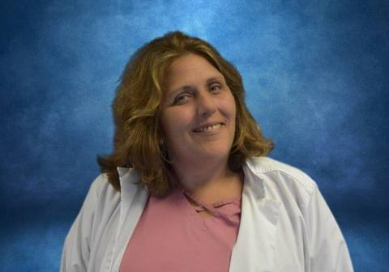

Mary Jean Millikan
Read bio
I'm a Ridgeview Alumni with 28 years of sobriety. I am actively involved in a 12-step program, and I am employed as an RN and the Director of Nursing at Ascensa Health at St. Jude's Recovery Center. I am also a Certified Addictions Nurse (CARN). Prior to this, I was employed at RVI for 14 years. I am very familiar with the disease of addiction and witness first-hand the miracles of recovery that come with quality treatment.